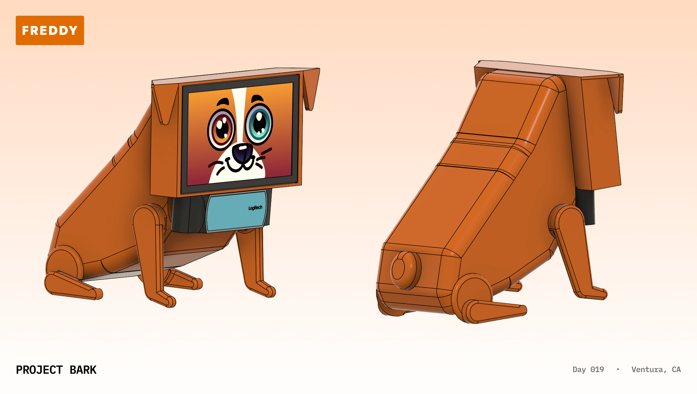

Freddy Robotics - See what your kids are eating
- One-man team based in Ventura, CA, building fun robots to improve childhood nutrition
- Founded in July 2024 by Jim Bisenius with support from Bill Bisenius
Our first product, the Freddy Dog:

- A small, robot dog that encourages children ages 3-10 to track meals and eat healthy
- Unlock tricks & games by adding your meals. Get multipliers for eating healthy!
- Sends parents notifications when their children are near possible allergens
- Parents can see their kid's diet in-app, and set nutrition goals as-needed
- Provide detailed nutritional records for sports, healthcare, and legal conflicts
Freddy Dog will be available first as a DIY build-kit, ideal for a parent and child, late this August.
This build kit takes approximately 30 minutes, teaches your child about AI, hardware, and software, and no coding or wiring experience is neccessary.
Estimated price: $199-299
(Includes access to our weekly project update and livestream session)
Frequently asked questions:
How does Freddy work?
Freddy uses it's camera to constantly scan it's surroundings, identifying objects and faces using Google's Tensorflow AI locally. Once Tensorflow has recognized a face in the image-frame alongside a meal, it will blur any faces within the image and send it to the GPT-4o-mini API for processing, which is able to estimate your foods nutritional details and grade your meal's overall nutrition score (A-F) with reasnonable accuracy. These results are then viewable in our mobile-app for parents.
How do allergen notifications work?
Parents add a list of potential allergens during setup, and sets a priority level. When Freddy's camera detects any of of these potential allergens in camera using GPT-4o, we'll immediately send a notification to the attached parent, alongside any other contact information listed (your nanny, daycare facility, etc.). Parents can also adjust the confidence level, or likelyhood to trigger a false alarm.
How do I contact you?
Reach out to Jim at jim@freddyrobotics.com or 984-269-8841
© Copyright 2024 Freddy Robotics Company. All rights reserved.